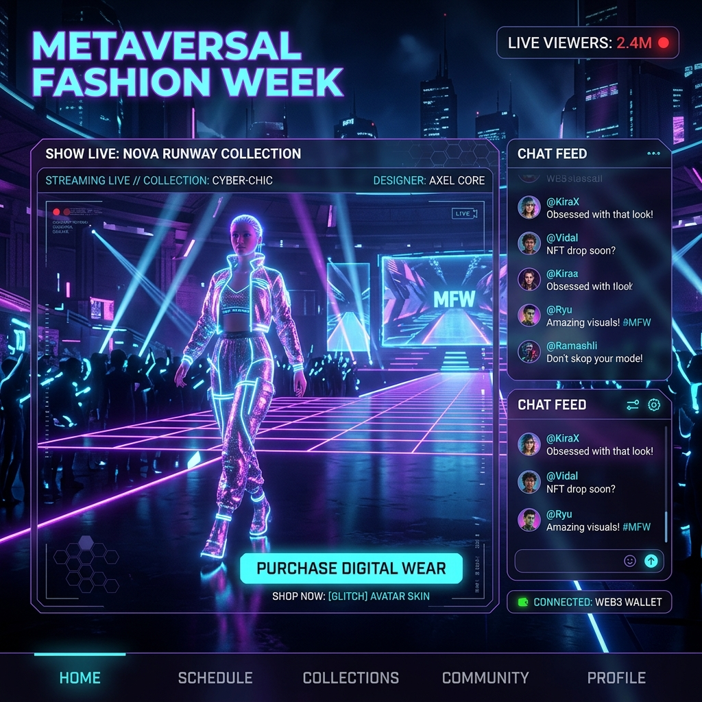

ROBOTICS / FOOD SERVICE
「美味しいコーヒー」を、
「美味しいコーヒー」を、
コードとモーターで抽出する。
ROBO-CAFEは、熟練のバリスタの動きをモーションキャプチャで完全再現した多関節ロボットアームが、注文からドリップ、提供までを全自動で行う、究極の無人カフェ・プラットフォームです。
THE BARISTA BOTTLENECK
飲食業界の「深刻な人手不足」と「品質のムラ」
時給を上げてもアルバイトが集まらない。やっと育てたスタッフがすぐに辞めてしまう。さらに、淹れる人によってコーヒーの味が変わってしまうという限界が来ています。
MOTION CAPTURE
匠の技を「デジタルデータ」として記録する
バリスタの動作の完全再現
世界大会優勝レベルのバリスタの腕にセンサーを付け、お湯を注ぐ速度、円を描く角度、蒸らしの時間をデータ化。ロボットアームがそれを1ミリの狂いもなくトレースします。
豆の状態に合わせた動的調整
コーヒー豆の焙煎からの日数や、その日の気温・湿度をセンサーで検知。AIが最適な「挽き目（粒度）」と「湯温」を自動計算します。
圧倒的な生産スピードとエンタメ性
2本のアームを使って同時に4杯のコーヒーを抽出可能。なめらかで未来的なロボットの動き自体が、顧客を惹きつける最高のエンターテインメントになります。
SEAMLESS ORDERING
モバイルオーダーによるゼロ・タイム提供
通勤電車の中からスマホで注文と決済を完了。「あと3分で店に着く」というGPS情報をロボットが受け取り、来店した瞬間に熱々のコーヒーがロッカーから提供されます。
MICRO SPACE
24時間365日、わずか2坪で営業可能
人間が動くスペースや休憩室が不要なため、駅のデッドスペースやオフィスの片隅など、わずか2坪（約6平米）の面積があれば無人のカフェを開業できます。
CLIENT SUCCESS
Case Study | 都心のオフィスビル・ロビー
人間のスタッフでは対応不可能な早朝や深夜にも高品質なコーヒーを提供し、驚異的な利益率を達成しました。
OUR VISION
「作業」を機械に、「おもてなし」を人間に
私たちは「単調な抽出作業」をロボットに任せることで、人間が「新しいレシピの開発」や「顧客との深い会話」に集中できる未来を創ります。